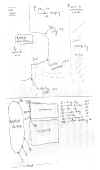
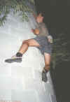
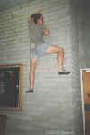

By Lee Skidmore, November 1999

| James Cook University Buildering Guide |
By Lee Skidmore, November 1999 |
|
|
|
INTRODUCTION
University students who are also climbers are faced with a tricky dilemma. They must study to pass their exams, and yet they must also climb, so they do not die. This guide was produced by one such student who found that the University itself can offer a wealth of buildering to the study-enslaved-climbing-deprived.
NOTE: The best time to builder is night so you can avoid security guards, but anyway, they don't care too much. Be nice to them.
|
GRADING SYSTEM Grade 17 and below are given their numeric grade |
The grades are more for comparison of climbs than anything else. Stars are given to climbs I find fun to do.
| Administration | Commerce/Computer Centre | Humanities | Student Union | Library | Biol Sciences |
|
The Admin block is made out of large unpainted besser bricks, which make an excellent surface. Areas where the building is convex are best due to the edges formed. Descriptions often state 'numbers of bricks' as reference points. This relates to the number of brick rows from the ground.
Dirty Slap 3m V0 |
 |
|
Above: Admin/Commerce map |
|
* Believe 2-3m V1+
|
 |
|
Above: Lee on Ankle Breaker |
** Thin City 4m V2
Facing Ankle Breaker, walk 9 paces right, following rock garden skirting the wall, to come across another convex wall. Handholds 1,2 and 3 on this problem are marked with small black numbers. Start with
L-hand 8 bricks up and Rand 9 bricks up. Tricky big move up and right gives Rand
hold #3, 14 bricks up. From here continue up to 19 bricks up below the bottom left of the window (current finishing point) or continue if your balls are brass.
Lee Skidmore 3/11/97.
** National Security 4-5m V0+
So named because I got surprised by an inquisitive security guard after the FA. Located 30m away from previous problems. From the intersection in the commerce rock wall (see the map), walk 12 paces to the set of Admin block windows on the convex wall. Start with both feet on concrete sill of lowest window. Grab edges above window and do a high step with the
L-foot to the obvious hold. Rock onto this and stand up. Now the going is straightforward, directly up the crimps. Current finish is 21 bricks up (level with top of second window) and that was done without a spotter or sketch pad. With these you may wish to take it to 23 bricks.
Lee Skidmore 7/11/97.
* Window Shopping 3-4m V1
Similar to Dirty Slap, but harder and with more moves. Requires good footwork. From the intersection in the commerce rock wall (see the map), walk 12 paces to the set of Admin block windows on the convex wall. Start left foot on concrete sill of lowest window. Work up and right on small crimps. Finishing point is touching the top concrete mounting of the second window up, as for Dirty Slap. Usage of window allowed.
Lee Skidmore 3/11/97.
|
Commerce/Computer Centre Building Commerce is found by walking through the Admin carpark facing away from the road. There is also a cool 17m long rock wall in the shape of an 'L' on the lower left side of this building (between the computer centre and the Admin block). This is a good place to get pumped, and half of it is undercover and well lit.
* Ar�te King 4m ar�te + 4m roof
V0- |
|
|
Above: Admin/Commerce map |
Waltz 4m bar + 4m roof 15
Waltz up the metal bar used in Ar�te King without using ar�te, to roof and 'I' beam. Out beam to concrete pole and down this.
Lee Skidmore 4/11/97.
Easy Does It 3m bar + 4m roof 16
Thinner than Waltz. From Waltz, walk 5 paces uphill to the next metal bar. Up this bar to 'I' beam. Out roof on this to concrete pole and down the pole or jump off.
Lee Skidmore 4/11/97.
Humanities Undercover Area
This area is easily found by walking from the Admin carpark, away from the road but instead of going
straight ahead (commerce) turn right and enter the undercover area. This place is lit at night and has snack and drink machines. Problems are listed from left to right as you face them.
* The "Corrosive" Dyno
Fun. Found outside door of HA002 room. Hang off stair landing between cupboard and stairs with feet smearing vertical concrete. From this position, do a massive one-arm throw to the top of the black railing. The grade is kinda dependant on your height. Has now been done double handed (22/5/98) at about V1.
Lee Skidmore 4/11/97.
HA002 ar�te 3m 16
Around four moves in this problem. Up the rough sandstone ar�te right of entrance into HA002 and directly opposite the 'corrosive' dyno to the juggy ledge at the top.
Lee Skidmore mid '97.
|
Beaming 3m V0- |
 |
|
Above: Lee on Head High |
HA003 ar�te 3m V0-
This problem is 5m away from the HA002 ar�te. Same deal as HA002 ar�te but harder. Climb
ar�te to the left of HA003 (mostly on the right side) to the roof.
Lee Skidmore mid '97.
* Tension Layback 3m up + 3m roof V2
Facing HA003 ar�te, about face and walk forward and left about 10m to reach the beam on the lefthand side of the stairs going belowground. Layback up the concrete beam to the roof, grab grey 'C' bar and monkey across. Jump down.
Lee Skidmore 22/5/98.
Student Union Area
* Union Pipe 3m pipe + 2m traverse V0+
Starts where black bitumen meets paving. You should be able to see a blue and white 'Union Administration' sign. Ascend creme coloured square pipe bolted to rough sandstone wall for 2m. Reach right and grab green bar. Hang off this and traverse right. Latch the edge of the orange paved steps and just use hands to get up these two to the top step. Now heel hook with the left and climb over railing (crux).
Lee Skidmore 4/11/97.
Squash Steps 5m V0-
Starts on the steps outside fitness centre/squash courts. Start as low on steps as possible. Climb the underside of these to the roof and grab metal 'C' beam. Now lock feet and work out using only the metal beam until body is fully tensioned beneath the roof. Now grab wooden lip (body fully stretched) and cut away (or do it static) and climb over railing.
Lee Skidmore 7/11/97.
Noir Board 3m 17
Starts 10m down from SS. Climb ribbed concrete on the left side of the main university blackboard to plasterboard roof. Get situated beneath roof and reach around it and up to grab the top of the building. This is the current finishing point. Climbing onto the top of the building will add danger and grades.
Lee Skidmore 7/11/97.
Library Area
The library has various problems on it, many you can make up as you walk around it. One cool wall is located on the back side of the library closest to TESAG. The 3m high wall forms the railing for a flight of small steps and is lit by a massive spotlight at night. A couple of problems have been done here (up to about V4) by Doug Hockly (22/5/98) and all finish by latching the top.
Biological Sciences Area
Facing the main entrance to old Biol Sciences, walk up and right 25m into the undercover pathway. On your right is "The Pizza Hut" building. The following problem is on the 6m long, rough-hewn sandstone wall.
Doug's Traverse 6m V5
Starts on the ar�te in the doorway of pizza hut and traverses the length of the wall to finish by reaching around the far right
ar�te.
Done in two sections by Doug Hockly on 22/5/98. It needs to be linked by someone
to make the V5.
There is a good warm up wall on Biological Sciences. Facing Doug's traverse, turn left and walk
towards the library until path ends. Turn left again to find convex, rough wall. Lots of pinch-grips there!

{kind=link}
{kind=link}
{kind=link}